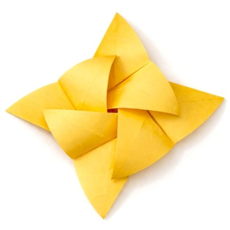
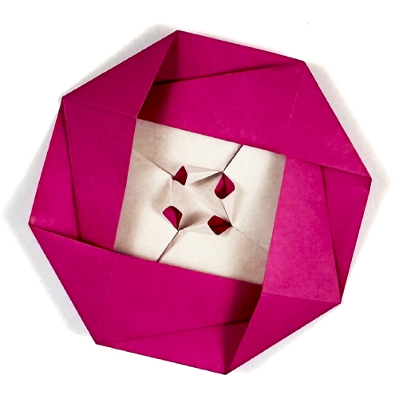
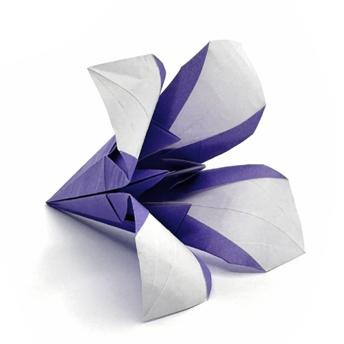

Paper Floral Swirls

Paper Camellia

Paper Iris

Paper Lotus
Origami flower designs are colorful, simple, and fun paper creations that help kids express their creativity. These easy-to-make flowers improve concentration, patience, and fine motor skills. With basic folding steps, children can create beautiful paper flowers while enjoying a relaxing and engaging learning activity that boosts imagination and confidence.
Paper Floral Swirls
Paper Camellia
Paper Iris
Paper Lotus